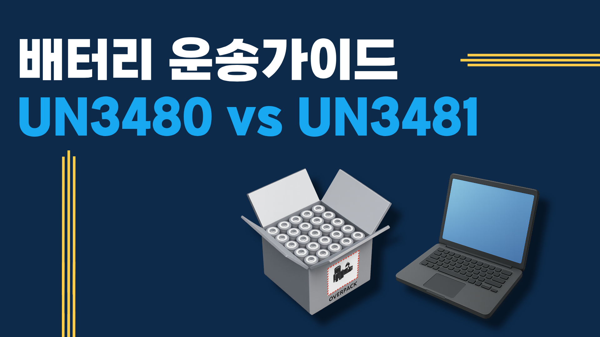

항공사마다 기준이 다른 이유 — 그래서 거절당합니다
리튬배터리 항공운송은 IATA DGR(위험물 규정)에 따라 처리됩니다. 문제는 항공사마다 해당 규정을 해석하고 적용하는 기준에 차이가 있다는 점입니다. A항공사에서 수락한 화물이 B항공사에서 거절될 수 있고, 동일한 배터리라도 포장 방법 하나로 결과가 달라집니다.
가장 많이 발생하는 거절 사유는 ① UN 번호 오기재, ② Wh 초과 미신고, ③ UN 인증 포장 미사용, ④ DG 신고서 오류입니다. 이 4가지만 정확히 처리해도 대부분의 거절을 막을 수 있습니다.
UN3480 vs UN3481 — 어떻게 다른가?
| 구분 | UN3480 | UN3481 |
|---|---|---|
| 정의 | 리튬이온 배터리 단독 발송 | 기기에 내장/동봉된 배터리 |
| 예시 | 보조배터리, 배터리팩, 셀 | 노트북, 스마트폰, 전동공구 |
| 포장기준(PI) | PI 965 (단독) / PI 968 (리튬메탈) | PI 966 (동봉) / PI 967 (내장) |
| 규제 강도 | 더 엄격 (단독 발송 위험 높음) | 상대적으로 완화 |
Wh 계산법 — 항공사가 거절하는 정확한 기준
배터리 용량을 Wh(와트시)로 계산하는 방법은 다음과 같습니다.
Wh = 전압(V) × 용량(Ah)
예) 3.7V × 10Ah = 37Wh
예) 11.1V × 5Ah = 55.5Wh (노트북 배터리 일반적 수준)
| Wh 구간 | 적용 기준 | PAX 가능 여부 |
|---|---|---|
| 100Wh 이하 | Section II 완화 규정 적용 | ✅ PAX 가능 |
| 100~160Wh | Section IB — 개수 제한 적용 | ⚠️ 항공사 사전 승인 필요 |
| 160Wh 초과 | Section IA — 특수 승인 필요 | ❌ CAO 전용 (화물기만) |
PAX vs CAO — 여객기와 화물기의 차이
PAX(Passenger Aircraft)는 승객이 탑승하는 여객기, CAO(Cargo Aircraft Only)는 화물 전용기를 의미합니다. 리튬배터리는 화재 위험 때문에 여객기 탑재 기준이 훨씬 엄격합니다.
고용량 배터리(100Wh 이상)는 여객기로 운송하기 어렵고, 화물기 전용 루트를 이용해야 합니다. 항공사와 노선에 따라 CAO 가용 여부가 달라지므로, 발송 전 반드시 확인이 필요합니다.
실제 처리 절차 4단계
1단계 — UN 번호 및 Wh 확인
배터리 셀 스펙(전압·용량)을 확인해 Wh를 계산하고, UN3480/UN3481 중 해당 번호를 결정합니다. MSDS(물질안전보건자료) 또는 제조사 배터리 스펙 시트가 있으면 더 정확합니다.
2단계 — PI 기준 포장
UN 인증 포장재를 사용해 IATA PI 965~967 기준에 맞게 포장합니다. 내부 완충재, 쇼트 방지 조치, 외부 박스 강도가 모두 기준을 충족해야 합니다.
3단계 — DG Declaration 작성
위험물 신고서(Shipper's Declaration for Dangerous Goods)를 정확히 작성합니다. UN 번호, Class 9, PG II, Net Quantity(개당 Wh × 개수)를 빠짐없이 기재합니다.
4단계 — 항공사 사전 승인 및 수출 통관
위험물 수락 가능한 항공사를 선택하고 사전 승인을 받습니다. 이후 세관에 위험물로 신고하고 수출 통관을 완료합니다.
투삼로지스 리튬배터리 처리 실적
투삼로지스는 보조배터리·리튬셀·전동공구 내장 배터리 등 다양한 리튬배터리 품목의 항공 특송 처리 경험을 보유하고 있습니다. UN 번호 확인부터 포장·DG 신고서 작성·통관까지 전 과정을 대행합니다.
배터리 종류·용량·수량·목적지만 알려주시면 처리 가능 여부와 비용을 즉시 안내드립니다. 리튬배터리 해외배송 기본 가이드도 함께 참고하세요.
자주 묻는 질문
- UN3480과 UN3481의 차이는 무엇인가요?
- UN3480은 배터리 단독 발송(보조배터리, 배터리팩), UN3481은 기기에 내장된 배터리(노트북, 스마트폰)입니다. 포장 기준이 다르며, UN3480이 더 엄격한 규정을 적용받습니다.
- 100Wh 이상 배터리는 항공으로 보낼 수 없나요?
- 보낼 수 있습니다. 단, 100Wh 초과는 항공사 사전 승인과 CAO(화물기 전용) 탑재가 필요합니다. 160Wh 초과는 특수 승인 절차가 추가됩니다.